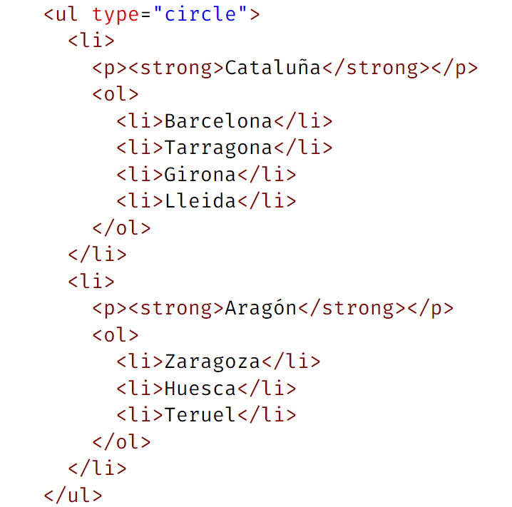

Aprendamos a hacer listas. Para incluir los emojis y símbolos, podéis buscarlos en w3schools.
Esta página contiene algunos estilos CSS que ya veremos en su oportunidad.
❓ <p>
❓ <code>
Otros tipos de listas ordenadas se pueden lograr con los siguientes atributos: type="A" para crear listas ordenadas con letras mayúsculas, type="a" con letras minúsculas y type="i" con números romanos en minúsculas. Ejemplo:
Las mascotas más comunes son: ❓ <p>
❓ <hr>
❓ <code>
Las listas desordenadas (o listas con viñetas) son llamadas de esta forma, porque no se numeran. Al crearlas, se añade a la izquierda, un círculo negro ● type="disc", a menos que se cambien el atributo tipo a: type="circle": círculo ○, type="square": cuadrado ■ o type="none" para eliminar los símbolos. El resto de estilos se definen en CSS. Ejemplo:
❓ <hr>
❓ <p> Se pueden incluir listas dentro de otras listas. De ésta manera se crean listas anidadas.

Cataluña
Aragón
❓ <p>
Para hacer el desplegable anterior se utiliza la combinación
<details>-<summary> de la siguiente manera:
<details> <summary>Título del Desplegable</summary> Contenido del desplegable </details>
Los colores y bordes están puestos con css.